Vapen, verktyg och ammunition
Vapen, verktyg och ammunition i Valheim – 200 föremål med biom, fyndplats, verktyg som krävs, recept och användning.
Inget föremål hittades.
 Armborst
Armborst
Ett långsamt men kraftfullt vapen.
Så får du det
 Armborstpil av ben
Armborstpil av ben
En grov pil av gulnat ben.
Så får du det
- Tillverka: 20 × Svart smedja av 8 ×
 Benfragment, 2 ×
Benfragment, 2 ×  Fjädrar
Fjädrar
 Armborstpil av järn
Armborstpil av järn
En robust järnprojektil.
Så får du det
 Asktand
Asktand
Den här bågen är trädets tredje liv; ur askan sprunget om igen.
Så får du det
- Tillverka: Svart smedja (nivå 3) av 10 ×
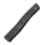
Askträ, 16 × Bränt ben, 5 ×
Bränt ben, 5 ×  Eldmetall, 5 ×
Eldmetall, 5 ×  Bensjöodjurstand · per uppgradering: 5 × Askträ, 10 × Bränt ben, 5 × Eldmetall, 5 × Bensjöodjurstand
Bensjöodjurstand · per uppgradering: 5 × Askträ, 10 × Bränt ben, 5 × Eldmetall, 5 × Bensjöodjurstand
Används till
 Atgeir av brons
Atgeir av brons
En sann krigares redskap.
Så får du det
- Tillverka: Smedja av 10 ×
 Trä, 8 ×
Trä, 8 ×  Brons, 2 ×
Brons, 2 ×  Läderlappar · per uppgradering: 4 × Brons
Läderlappar · per uppgradering: 4 × Brons
 Atgeir av järn
Atgeir av järn
Bloddrickare, skallbräckare, dödsbringare!
Så får du det
- Tillverka: Smedja (nivå 2) av 10 × Trä, 30 ×
 Järn, 2 × Läderlappar · per uppgradering: 15 × Järn, 1 × Läderlappar
Järn, 2 × Läderlappar · per uppgradering: 15 × Järn, 1 × Läderlappar
 Atgeir av svartmetall
Atgeir av svartmetall
En grym huggyxa av nästintill oförstörbar svartmetall.
Så får du det
- Tillverka: Smedja (nivå 4) av 10 ×
 Ädelträ, 30 ×
Ädelträ, 30 ×  Svartmetall, 5 ×
Svartmetall, 5 ×  Linnetråd · per uppgradering: 15 × Svartmetall, 5 × Linnetråd
Linnetråd · per uppgradering: 15 × Svartmetall, 5 × Linnetråd
 Basalt-bomb
Basalt-bomb
Under tillräcklig hetta stelnar den vid explosionstillfället.
Så får du det
- Tillverka: 5 × Arbetsbänk av 1 ×
 Asksvinspäls, 1 ×
Asksvinspäls, 1 ×  Asksvinsblåsa, 3 ×
Asksvinsblåsa, 3 ×  Proustitpulver
Proustitpulver
 Bitskt fiskbete
Bitskt fiskbete
Du är inte immun mot mördarmyggor, och fiskarna här är inte immuna mot detta agn!
Så får du det
- Tillverka: 20 × Matberedningsbord av 20 ×
 Fiskbete, 1 ×
Fiskbete, 1 ×  Fulingshuvud
Fulingshuvud
Används till
- Bete för: Havsabborre
 Blob Bomb: Pulp
Blob Bomb: Pulp
A dungeon is where the blob is.
Så får du det
- Tillverka: Arbetsbänk av 1 ×
 Flaska med kork, 1 ×
Flaska med kork, 1 ×  Pulp Trophy, 3 ×
Pulp Trophy, 3 ×  Dead Pulp
Dead Pulp
 Blodpåk
Blodpåk
Blod formligen genomsyrar denna spikklubba, men ännu är den inte nöjd.
Så får du det
- Tillverka: Svart smedja (nivå 4) av 1 ×
 Eldmetallklubba, 8 × Eldmetall, 1 ×
Eldmetallklubba, 8 × Eldmetall, 1 ×  Blodsten · per uppgradering: 8 × Eldmetall, 1 × Blodsten
Blodsten · per uppgradering: 8 × Eldmetall, 1 × Blodsten
 Blodtand
Blodtand
Pilar lossade från denna båge river in i kött med osedvanlig blödtörst.
Så får du det
 Bloodgold Arrow
Bloodgold Arrow
An arrow forged of perhaps the hardest materials in this world...
Så får du det
- Tillverka: 20 × Svart smedja av 1 ×
 Bloodgold, 2 × Fjädrar, 8 ×
Bloodgold, 2 × Fjädrar, 8 ×  Timberwood
Timberwood
 Bloodgold Bolt
Bloodgold Bolt
A bolt forged of perhaps the hardest materials in this world...
Så får du det
- Tillverka: 20 × Svart smedja av 1 × Bloodgold, 8 × Timberwood, 2 × Fjädrar
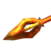
Bloodgold MissileYour attacker shall stand no chance as this missile finds its target.
Så får du det
- Tillverka: 20 × Hantverkarbord av 10 × Timberwood, 1 × Bloodgold
 Blödande bärsärkaryxor
Blödande bärsärkaryxor
Ju närmre döden du är, desto hårdare slår du.
Så får du det
- Tillverka: Svart smedja (nivå 4) av 1 ×
 Bärsärkayxor, 5 × Eldmetall, 1 × Blodsten · per uppgradering: 5 × Eldmetall, 1 × Blodsten
Bärsärkayxor, 5 × Eldmetall, 1 × Blodsten · per uppgradering: 5 × Eldmetall, 1 × Blodsten
 Bockbräckaren
Bockbräckaren
Ett vapen värdigt gudarna! Blir du träffad av den här kan du knappast undgå att märka det...
Så får du det
- Tillverka: Arbetsbänk (nivå 2) av 20 ×
 Kärntimmer, 5 ×
Kärntimmer, 5 ×  Rådjurshuvud, 2 × Läderlappar · per uppgradering: 5 × Kärntimmer, 2 × Rådjurshuvud, 1 × Läderlappar, 10 × Benfragment
Rådjurshuvud, 2 × Läderlappar · per uppgradering: 5 × Kärntimmer, 2 × Rådjurshuvud, 1 × Läderlappar, 10 × Benfragment
 Bronsklubba
Bronsklubba
Huvudvärk på en pinne.
Så får du det
- Tillverka: Smedja av 4 × Trä, 8 × Brons, 3 × Läderlappar · per uppgradering: 4 × Brons
 Bronskorp
Bronskorp
En välsmidd bronshacka. Kan bryta väldigt hård sten.
Så får du det
- Tillverka: Smedja av 3 × Kärntimmer, 10 × Brons · per uppgradering: 1 × Kärntimmer, 5 × Brons
 Bronsspetspil
Bronsspetspil
Vassare än flinta; dödens raska sändebud.
Så får du det
 Bronsspjut
Bronsspjut
Ett gediget spjut med en spets av polerat brons.
Så får du det
- Tillverka: Smedja av 5 × Trä, 6 × Brons, 2 ×
 Rådjursskinn · per uppgradering: 3 × Trä, 4 × Brons, 1 × Rådjursskinn
Rådjursskinn · per uppgradering: 3 × Trä, 4 × Brons, 1 × Rådjursskinn
 Bronssvärd
Bronssvärd
Bloddrickare, en törstig vän.
Så får du det
- Tillverka: Smedja av 2 × Trä, 8 × Brons, 2 × Läderlappar · per uppgradering: 1 × Trä, 4 × Brons, 1 × Läderlappar
 Bronsyxa
Bronsyxa
En skinande, polerad klinga; krökt som ett leende.
Så får du det
- Tillverka: Smedja av 4 × Trä, 8 × Brons, 2 × Läderlappar · per uppgradering: 4 × Brons, 1 × Läderlappar
 Brutal dräpare
Brutal dräpare
Om det blöder kan det dö.
Så får du det
- Tillverka: Svart smedja (nivå 4) av 1 ×
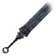
Dräparen, 15 ×Eldmetall, 1 × Blodsten · per uppgradering: 15 × Eldmetall, 1 × Blodsten
 Bråck
Bråck
Det tar knäcken på ryggen att använda den här bågen, men ack så värt det.
Så får du det
- Tillverka: Svart smedja av 10 × Ädelträ, 40 × Benfragment, 10 ×
 Raffinerad Eter · per uppgradering: 5 × Ädelträ, 20 × Benfragment
Raffinerad Eter · per uppgradering: 5 × Ädelträ, 20 × Benfragment
Bärsärkayxor
Låt vanvettet ta över och gå slakten till mötes.
Så får du det
- Tillverka: Svart smedja (nivå 3) av 15 × Bränt ben, 24 × Eldmetall, 3 × Asksvinspäls · per uppgradering: 15 × Eldmetall, 1 × Asksvinspäls
Används till
- Ingrediens i: Blödande bärsärkaryxor, Dundrande bärsärkaryxor, Ur-bärsärkaryxor
 Carapaxpil
Carapaxpil
Tung och vass kommer den göra ont.
Så får du det
- Tillverka: 20 × Svart smedja av 4 ×
 Carapax, 2 × Fjädrar, 8 × Trä
Carapax, 2 × Fjädrar, 8 × Trä - Kistor: Ruttet hål (Morgen) · 3–12 × · 46 % chans
 Carapaxpil till armborst
Carapaxpil till armborst
En tung och gedigen pil.
Så får du det
 Carapaxspjut
Carapaxspjut
Slipat till en slags hackig perfektion är det här spjutet otvivelaktigt dödligt.
Så får du det
- Tillverka: Svart smedja av 10 ×
 Trä från Yggdrasil, 4 × Carapax, 2 ×
Trä från Yggdrasil, 4 × Carapax, 2 × 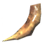
Käke · per uppgradering: 5 ×Trä från Yggdrasil, 4 × Carapax, 1 × Käke
 Dimmigt fiskbete
Dimmigt fiskbete
Ett agn som vägleder fisken genom dimhöljda vatten, rakt till din krok.
Så får du det
- Tillverka: 20 × Matberedningsbord av 20 × Fiskbete, 1 ×
 Oxödlehuvud
Oxödlehuvud
Används till
 Dimtunga
Dimtunga
Det svaga skenet skär skarpt genom dimman.
Så får du det
- Tillverka: Svart smedja av 3 × Ädelträ, 15 × Järn, 10 × Raffinerad Eter, 3 ×
 Irrbloss · per uppgradering: 10 × Järn, 5 × Raffinerad Eter, 1 × Irrbloss
Irrbloss · per uppgradering: 10 × Järn, 5 × Raffinerad Eter, 1 × Irrbloss
 Djuphavsharpun
Djuphavsharpun
Havets vrede.
Så får du det
- Tillverka: Arbetsbänk (nivå 2) av 8 × Ädelträ, 30 ×
 Kitin, 3 × Läderlappar
Kitin, 3 × Läderlappar
 Djuphavskniv
Djuphavskniv
En kniv från under ytan.
Så får du det
- Tillverka: Arbetsbänk (nivå 2) av 4 × Ädelträ, 20 × Kitin, 2 × Läderlappar · per uppgradering: 10 × Kitin
 Draug-pilbåge
Draug-pilbåge
Mörkt trä strängad med glittrande senor. Ett ondskefullt ting.
Så får du det
- Tillverka: Smedja (nivå 2) av 10 ×
 Uråldrig bark, 20 × Silver, 2 × Rådjursskinn, 10 ×
Uråldrig bark, 20 × Silver, 2 × Rådjursskinn, 10 ×  Guck · per uppgradering: 5 × Uråldrig bark, 10 × Silver, 2 × Rådjursskinn, 2 × Guck
Guck · per uppgradering: 5 × Uråldrig bark, 10 × Silver, 2 × Rådjursskinn, 2 × Guck
Dräparen
Den mäktiga klingan törstar efter fienders blod.
Så får du det
- Tillverka: Svart smedja (nivå 3) av 30 × Eldmetall, 5 × Asksvinspäls, 3 ×
 Morgen Sena · per uppgradering: 15 × Eldmetall, 5 × Asksvinspäls, 3 × Morgen Sena
Morgen Sena · per uppgradering: 15 × Eldmetall, 5 × Asksvinspäls, 3 × Morgen Sena
Används till
- Ingrediens i: Brutal dräpare, Gisslande dräpare, Urdräpare
 Dunder
Dunder
Det som händer härnäst kommer chocka dig.
Så får du det
- Tillverka: Galderbord (nivå 2) av 10 × Askträ, 4 × Eldmetall, 3 ×
 Himlafjäder, 1 × Blodsten · per uppgradering: 5 × Askträ, 2 × Eldmetall, 3 × Himlafjäder, 1 × Blodsten
Himlafjäder, 1 × Blodsten · per uppgradering: 5 × Askträ, 2 × Eldmetall, 3 × Himlafjäder, 1 × Blodsten
 Dundrande bärsärkaryxor
Dundrande bärsärkaryxor
Ett sådant blodbad kommer omge dig när du bär dessa yxor att Tor själv hade varit stolt.
Så får du det
- Tillverka: Svart smedja (nivå 4) av 1 × Bärsärkayxor, 5 × Eldmetall, 1 ×
 Iolit · per uppgradering: 5 × Eldmetall, 1 × Iolit
Iolit · per uppgradering: 5 × Eldmetall, 1 × Iolit
 Dvärgalykta
Dvärgalykta
Enkla facklor är så gammalmodiga.
Så får du det
- Tillverka: Svart smedja av 2 × Brons, 1 ×
 Surtshjärta, 1 ×
Surtshjärta, 1 ×  Kristall
Kristall - Plocka upp: Dvergr-utgrävning, Dvergr-vakttorn, Förkolnad tornruin, Dvergr-fyr, Drottningen
Används till
- Byggmaterial till: Dvärgsk lyktstolpe, Dvärgsk vägglykta
 Dvärgasejdel
Dvärgasejdel
Den rymmer mycket mjöd!
Så får du det
- Kistor: Infekterad gruva · 6,3 % chans
- Plocka upp: Dvergr-vakttorn, Dvergr-fyr, Drottningen
 Dyrnwyn
Dyrnwyn
Svärdet som bröts är ånyo helt. Det brinner hett, eldat av forna krigares minnen.
Så får du det
- Tillverka: Svart smedja (nivå 4) av 1 ×
 Fragment av Dyrnwyns fäste, 1 ×
Fragment av Dyrnwyns fäste, 1 ×  Fragment från Dyrnwyns klinga, 1 ×
Fragment från Dyrnwyns klinga, 1 ×  Fragment av Dyrnwyns udd, 20 × Eldmetall, 1 × Blodsten · per uppgradering: 10 × Eldmetall, 1 × Blodsten
Fragment av Dyrnwyns udd, 20 × Eldmetall, 1 × Blodsten · per uppgradering: 10 × Eldmetall, 1 × Blodsten
 Early Axes
Early Axes
Mighty weapons from long ago, from a time when the world was still young and incomplete...
Så får du det
- Tillverka: Arbetsbänk av 4 × Trä, 1 ×
 Curious Axe Head, 1 ×
Curious Axe Head, 1 ×  Mysterious Axe Head · per uppgradering: 2 × Trä, 2 × Läderlappar
Mysterious Axe Head · per uppgradering: 2 × Trä, 2 × Läderlappar
 Echo Spike
Echo Spike
A chill that goes right through to the bone.
Så får du det
- Tillverka: Galderbord (nivå 3) av 10 × Bloodgold, 4 ×
 Nornathread, 1 ×
Nornathread, 1 ×  Frostfire Essence · per uppgradering: 5 × Bloodgold, 2 × Nornathread, 1 × Frostfire Essence
Frostfire Essence · per uppgradering: 5 × Bloodgold, 2 × Nornathread, 1 × Frostfire Essence - Tillaga: Frost Foundry av
 Cast: Echo Spike
Cast: Echo Spike
Eldmetallklubba
Tung och spikbeprydd eldmetall lämpar sig utmärkt att slå in ansikten med.
Så får du det
- Tillverka: Svart smedja (nivå 3) av 10 × Bränt ben, 15 × Eldmetall, 5 ×
 Svavel, 3 × Asksvinspäls · per uppgradering: 5 × Bränt ben, 8 × Eldmetall, 3 × Svavel, 2 × Asksvinspäls
Svavel, 3 × Asksvinspäls · per uppgradering: 5 × Bränt ben, 8 × Eldmetall, 3 × Svavel, 2 × Asksvinspäls
Används till
- Ingrediens i: Blodpåk, Klossen, Stormstjärna
 Eldmetallprojektil
Eldmetallprojektil
Smidd av en av Valheims hårdaste metaller kommer denna pil säkert stävja dina fiender.
Så får du det
 Eldpil
Eldpil
Denna pil bränner det den träffar.
Så får du det
- Tillverka: 20 × Arbetsbänk (nivå 2) av 8 × Trä, 8 ×
 Kåda, 2 × Fjädrar
Kåda, 2 × Fjädrar - Kistor: Skeppssättning (grav) · 10–15 × · 39 % chans
 Ember Charge
Ember Charge
Trapped embers, ready to burst. Caution is advised.
Så får du det
 Enhärjarslägga
Enhärjarslägga
Grip hårt denna mäktiga hammare, som törstar efter kaos.
Så får du det
- Tillverka: Svart smedja av 10 × Trä från Yggdrasil, 20 × Järn, 10 × Raffinerad Eter · per uppgradering: 2 × Trä från Yggdrasil, 15 × Järn, 2 × Raffinerad Eter
 Fackla
Fackla
Den ger värme och ljus, driver bort mörkret.
Så får du det
- Tillverka: utan arbetsbänk av 1 × Trä, 1 × Kåda
- Kistor: Skeppssättning (grav) · 53 % chans, By i norr · 53 % chans, Hydda (Norr) · 52 % chans, Skogshuggarläger · 52 % chans, Stridsruin · 50 % chans, Övergivet trähus · 28–36 % chans, Övergiven gård · 36 % chans, Draugr-by · 36 % chans
Fiskbete
Vanligt dvärga-fiskbete. Fiskespö medföljer ej.
Så får du det
- Köp: Haldor · 10 mynt (× 20)
- Plocka upp: Frostgrotta · 2–4 ×
Används till
- Ingrediens i: Bitskt fiskbete, Dimmigt fiskbete, Frostigt fiskbete, Hett fiskbete, Kallt fiskbete, Klibbigt fiskbete, Mossigt fiskbete, Tungt fiskbete
- Bete för: Abborre, Gädda
 Fiskespö
Fiskespö
Dvärgafiskespö, standardutgåva.
Så får du det
- Köp: Haldor · 350 mynt
- Plocka upp: Frostgrotta
 Flintkniv
Flintkniv
Vässad flinta, ett pålitligt redskap.
Så får du det
- Tillverka: Arbetsbänk av 2 × Trä, 4 ×
 Flinta, 2 × Läderlappar · per uppgradering: 2 × Flinta
Flinta, 2 × Läderlappar · per uppgradering: 2 × Flinta
 Flintspetspil
Flintspetspil
En hud-förgörare med ett huvud av flinta.
Så får du det
- Tillverka: 20 × Arbetsbänk (nivå 2) av 8 × Trä, 2 × Flinta, 2 × Fjädrar
- Kistor: Stridsruin · 10–20 × · 50 % chans, Tornruin · 5–10 × · 48 % chans, Ruin · 5–10 × · 48 % chans, Träskhydda · 5–10 × · 48 % chans, Sjunken tornruin · 5–10 × · 48 % chans, Trollgrotta · 5–10 × · 48 % chans, Stenhusruin · 5–10 × · 48 % chans, Gravkammare (Svartskogen) · 5–10 × · 46 % chans, Hildir-uppdrag: Pyrande grav · 5–10 × · 46 % chans, Övergivet trähus · 10–20 × · 28–36 % chans, Övergiven gård · 10–20 × · 36 % chans, Draugr-by · 10–20 × · 36 % chans
 Flintspetsspjut
Flintspetsspjut
Om ditt öga märker något till döden, låt din arm skicka medelandet.
Så får du det
- Tillverka: Arbetsbänk av 5 × Trä, 10 × Flinta, 2 × Läderlappar · per uppgradering: 3 × Trä, 5 × Flinta, 1 × Läderlappar
 Flintyxa
Flintyxa
Vassare än vanlig sten.
Så får du det
- Tillverka: Arbetsbänk av 4 × Trä, 6 × Flinta · per uppgradering: 3 × Flinta, 2 × Läderlappar
 Fläsksprättaren
Fläsksprättaren
Om klor fungerar för vargar, varför inte för en viking?
Så får du det
 Frostfire Atgeir
Frostfire Atgeir
Let the flames begin to devour, while the ice claims whatever remains.
Så får du det
- Tillverka: Svart smedja (nivå 4) av 1 ×
 Nord Atgeir, 20 × Bloodgold, 1 × Frostfire Essence · per uppgradering: 10 × Bloodgold, 1 × Frostfire Essence
Nord Atgeir, 20 × Bloodgold, 1 × Frostfire Essence · per uppgradering: 10 × Bloodgold, 1 × Frostfire Essence
 Frostfire Axe
Frostfire Axe
Burn it all to the ground, or freeze it in an eternal moment of destruction...
Så får du det
- Tillverka: Svart smedja (nivå 4) av 1 ×
 Nord Axe, 20 × Bloodgold, 1 × Frostfire Essence · per uppgradering: 10 × Bloodgold, 1 × Frostfire Essence
Nord Axe, 20 × Bloodgold, 1 × Frostfire Essence · per uppgradering: 10 × Bloodgold, 1 × Frostfire Essence
 Frostfire Bow
Frostfire Bow
Keep your head cool as you draw, and then let your fury loose with your arrows.
Så får du det
- Tillverka: Svart smedja (nivå 4) av 1 ×
 Nord Bow, 20 × Bloodgold, 1 × Frostfire Essence · per uppgradering: 10 × Bloodgold, 1 × Frostfire Essence
Nord Bow, 20 × Bloodgold, 1 × Frostfire Essence · per uppgradering: 10 × Bloodgold, 1 × Frostfire Essence
 Frostfire Crossbow
Frostfire Crossbow
If your enemies don't freeze as you take aim, they are sure to do so once they are hit.
Så får du det
- Tillverka: Svart smedja (nivå 4) av 1 ×
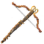
Nord Crossbow, 20 ×Bloodgold, 1 × Frostfire Essence · per uppgradering: 10 × Bloodgold, 1 × Frostfire Essence
 Frostfire Dagger
Frostfire Dagger
A cut from this blade stings like ice, then burns like the flame.
Så får du det
- Tillverka: Svart smedja (nivå 4) av 1 ×
 Nord Dagger, 20 × Bloodgold, 1 × Frostfire Essence · per uppgradering: 10 × Bloodgold, 1 × Frostfire Essence
Nord Dagger, 20 × Bloodgold, 1 × Frostfire Essence · per uppgradering: 10 × Bloodgold, 1 × Frostfire Essence
 Frostfire Greataxe
Frostfire Greataxe
Strike your foes with a frozen inferno!
Så får du det
- Tillverka: Svart smedja (nivå 4) av 1 ×
 Nord Greataxe, 20 × Bloodgold, 1 × Frostfire Essence · per uppgradering: 10 × Bloodgold, 1 × Frostfire Essence
Nord Greataxe, 20 × Bloodgold, 1 × Frostfire Essence · per uppgradering: 10 × Bloodgold, 1 × Frostfire Essence
 Frostfire Greatsword
Frostfire Greatsword
The choice between a fiery end and a frozen one is simple: Both at the same time.
Så får du det
- Tillverka: Svart smedja (nivå 4) av 1 ×
 Nord Greatsword, 20 × Bloodgold, 1 × Frostfire Essence · per uppgradering: 10 × Bloodgold, 1 × Frostfire Essence
Nord Greatsword, 20 × Bloodgold, 1 × Frostfire Essence · per uppgradering: 10 × Bloodgold, 1 × Frostfire Essence
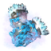
Frostfire KnucklechainsA slight risk of frostbite is inevitable.
Så får du det
- Tillverka: Svart smedja (nivå 4) av 1 ×
 Nord Knucklechains, 20 × Bloodgold, 1 × Frostfire Essence · per uppgradering: 10 × Bloodgold, 1 × Frostfire Essence
Nord Knucklechains, 20 × Bloodgold, 1 × Frostfire Essence · per uppgradering: 10 × Bloodgold, 1 × Frostfire Essence
 Frostfire Mace
Frostfire Mace
Are those sparks that fly as this weapon finds its impact, or are they shards of ice?
Så får du det
- Tillverka: Svart smedja (nivå 4) av 1 ×
 Nord Mace, 20 × Bloodgold, 1 × Frostfire Essence · per uppgradering: 10 × Bloodgold, 1 × Frostfire Essence
Nord Mace, 20 × Bloodgold, 1 × Frostfire Essence · per uppgradering: 10 × Bloodgold, 1 × Frostfire Essence
 Frostfire Sledge
Frostfire Sledge
Is it so cold that it's burning, or so hot that it's freezing?
Så får du det
- Tillverka: Svart smedja (nivå 4) av 1 ×
 Nord Sledge, 20 × Bloodgold, 1 × Frostfire Essence · per uppgradering: 10 × Bloodgold, 1 × Frostfire Essence
Nord Sledge, 20 × Bloodgold, 1 × Frostfire Essence · per uppgradering: 10 × Bloodgold, 1 × Frostfire Essence
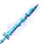
Frostfire SpearDipped in frozen flames, this spear spells certain doom.
Så får du det
- Tillverka: Svart smedja (nivå 4) av 1 ×
 Nord Spear, 20 × Bloodgold, 1 × Frostfire Essence · per uppgradering: 10 × Bloodgold, 1 × Frostfire Essence
Nord Spear, 20 × Bloodgold, 1 × Frostfire Essence · per uppgradering: 10 × Bloodgold, 1 × Frostfire Essence
 Frostfire Sword
Frostfire Sword
Flames dance along this blade, but are they hot or cold?
Så får du det
- Tillverka: Svart smedja (nivå 4) av 1 ×
 Nord Sword, 20 × Bloodgold, 1 × Frostfire Essence · per uppgradering: 10 × Bloodgold, 1 × Frostfire Essence
Nord Sword, 20 × Bloodgold, 1 × Frostfire Essence · per uppgradering: 10 × Bloodgold, 1 × Frostfire Essence
 Frostigt fiskbete
Frostigt fiskbete
Inte särskilt näringsrikt, så de enda fiskar som nappar på detta agn är de som är vana vid att knapra is.
Så får du det
Används till
- Bete för: Nordisk lax
 Frostner
Frostner
De vandöda skyr silver. Påminn dem varför.
Så får du det
- Tillverka: Smedja (nivå 3) av 10 × Uråldrig bark, 30 × Silver, 5 ×
 Kött ifrån Ymer, 5 ×
Kött ifrån Ymer, 5 ×  Köldkörtel · per uppgradering: 15 × Silver
Köldkörtel · per uppgradering: 15 × Silver
 Frostpil
Frostpil
En skärva sylvass is.
Så får du det
- Tillverka: 20 × Arbetsbänk (nivå 4) av 8 × Trä, 4 ×
 Obsidian, 2 × Fjädrar, 1 × Köldkörtel
Obsidian, 2 × Fjädrar, 1 × Köldkörtel - Kistor: Övergiven timmerstuga · 5–10 × · 44 % chans, Bergbrunn · 5–10 × · 44 % chans, Tornruin · 5–10 × · 44 % chans
 Froststav
Froststav
En stav kall som den treårsvinter som skall förebåda tidens ände.
Så får du det
- Tillverka: Galderbord av 20 × Trä från Yggdrasil, 4 × Köldkörtel, 16 × Raffinerad Eter · per uppgradering: 10 × Trä från Yggdrasil, 2 × Köldkörtel, 8 × Raffinerad Eter
 Fördärvbringaren
Fördärvbringaren
Inte ens jättarna från fordom kunde uthärda detta vapens giftiga bett.
Så får du det
- Tillverka: Svart smedja av 5 × Trä från Yggdrasil, 15 × Järn, 3 ×
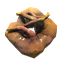
Gallblåsa, 10 ×Raffinerad Eter · per uppgradering: 10 × Järn, 1 × Gallblåsa, 1 × Raffinerad Eter
 Gallblåsebomb
Gallblåsebomb
Hanteras varsamt.
Så får du det
 Giftpil
Giftpil
Ett bittert stick från fjärran.
Så får du det
- Tillverka: 20 × Arbetsbänk (nivå 3) av 8 × Trä, 4 × Obsidian, 2 × Fjädrar, 2 ×
 Gegga
Gegga - Kistor: Träskruin (torn) · 10–15 × · 37 % chans, Gravfält · 10–15 × · 37 % chans, Sjunken krypta · 10–15 × · 36 % chans
 Gisslande dräpare
Gisslande dräpare
Blixtarna fångade i klingan är rastlösa och söker efter något att slå ner i.
Så får du det
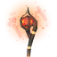
GlödgestavMuspelheims tryckande hetta verkar nästan mild jämfört med vad denna stav kan åstadkomma...
Så får du det
- Tillverka: Galderbord av 20 × Trä från Yggdrasil, 4 × Surtshjärta, 16 × Raffinerad Eter · per uppgradering: 10 × Trä från Yggdrasil, 2 × Surtshjärta, 8 × Raffinerad Eter
 Grappling Hook
Grappling Hook
For a dramatic entrance, or a swift retreat.
Så får du det
- Tillverka: Svart smedja av 10 × Trä från Yggdrasil, 10 × Raffinerad Eter, 4 × Käke, 1 ×
 Hook
Hook
 Gravskändarens skalle
Gravskändarens skalle
Offra litet blod för att väcka de döda. Uppgradera skallen för att väcka ytterligare skelett, och förbättra din blodsmagi för att göra dem starkare.
Så får du det
- Tillverka: Galderbord av 10 × Benfragment, 16 × Raffinerad Eter, 4 ×
 Skalle · per uppgradering: 5 × Benfragment, 8 × Raffinerad Eter, 2 × Skalle
Skalle · per uppgradering: 5 × Benfragment, 8 × Raffinerad Eter, 2 × Skalle
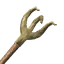
GrepEtt verktyg för sådd och odling.
Så får du det
- Tillverka: Smedja av 5 × Kärntimmer, 5 × Brons · per uppgradering: 1 × Kärntimmer, 1 × Brons
 Hacka
Hacka
En bondes redskap för att bearbeta jorden.
Så får du det
 Hammare
Hammare
Med denna i din hand kan du resa höga hallar och mäktiga fästningar.
Så får du det
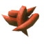
Hett fiskbeteVissa fiskar gillar varmt vatten, och det här agnet värmer vattnet nära kokpunkten.
Så får du det
- Tillverka: 20 × Matberedningsbord av 20 × Fiskbete, 1 ×
 Krigartrofé
Krigartrofé
Används till
- Bete för: Magmafisk
 Himlens makt
Himlens makt
Inte en hammare, må så vara, men ändå ett vapen värdigt självaste Tor.
Så får du det
- Tillverka: Svart smedja av 10 × Trä från Yggdrasil, 15 × Raffinerad Eter, 5 × Silver, 2 × Käke · per uppgradering: 15 × Raffinerad Eter, 5 × Silver, 2 × Käke
 Hornkorp
Hornkorp
Med det här redskapet kan du bryta de envisaste av stenar.
Så får du det
- Tillverka: Arbetsbänk av 10 × Trä, 1 ×
 Hårt hjorthorn
Hårt hjorthorn
 Huggtandsspjut
Huggtandsspjut
Även död så suktar vargens tand efter kött.
Så får du det
- Tillverka: Smedja (nivå 3) av 10 × Uråldrig bark, 4 ×
 Vargtand, 2 × Läderlappar, 2 × Silver · per uppgradering: 5 × Uråldrig bark, 2 × Vargtand, 1 × Läderlappar, 1 × Silver
Vargtand, 2 × Läderlappar, 2 × Silver · per uppgradering: 5 × Uråldrig bark, 2 × Vargtand, 1 × Läderlappar, 1 × Silver
 Högtidshorn
Högtidshorn
Ett år sedan vi anlände... Skål!
Så får du det
- Tillverka: Arbetsbänk av 2 × Brons, 2 ×
 Trollskinn, 2 × Järn
Trollskinn, 2 × Järn
 Isblobb på flaska
Isblobb på flaska
If you hold it for too long your hand might just freeze in place.
Så får du det
- Tillverka: Arbetsbänk av 1 × Flaska med kork, 1 ×
 Drakhuvud, 3 × Kåda
Drakhuvud, 3 × Kåda
 Jägarbåge
Jägarbåge
Noggrant snickrad och strängad; en jägares lycka.
Så får du det
- Tillverka: Smedja av 10 × Ädelträ, 20 × Järn, 10 × Fjädrar, 2 × Rådjursskinn · per uppgradering: 5 × Ädelträ, 10 × Järn, 5 × Fjädrar, 2 × Rådjursskinn
 Järnklubba
Järnklubba
En knytnävsstor järnklump på ett träskaft.
Så får du det
- Tillverka: Smedja (nivå 2) av 4 × Trä, 20 × Järn, 3 × Läderlappar · per uppgradering: 10 × Järn
 Järnkorp
Järnkorp
Ett kraftigt redskap av härdat järn.
Så får du det
- Tillverka: Smedja (nivå 2) av 3 × Kärntimmer, 20 × Järn · per uppgradering: 1 × Kärntimmer, 10 × Järn
 Järnslägga
Järnslägga
En mäktig hammare, värdig en krigsmästare.
Så får du det
- Tillverka: Smedja (nivå 2) av 10 × Uråldrig bark, 30 × Järn, 4 × Kött ifrån Ymer, 1 ×
 Draugkämpes huvud · per uppgradering: 2 × Uråldrig bark, 15 × Järn, 2 × Kött ifrån Ymer
Draugkämpes huvud · per uppgradering: 2 × Uråldrig bark, 15 × Järn, 2 × Kött ifrån Ymer
Järnspetspil
Med en spets av järn och vingar av mörka fjädrar.
Så får du det
- Tillverka: 20 × Smedja (nivå 2) av 8 × Trä, 1 × Järn, 2 × Fjädrar
- Kistor: Träskruin (torn) · 10–15 × · 37 % chans, Gravfält · 10–15 × · 37 % chans, Sjunken krypta · 10–15 × · 36 % chans
 Järnsvärd
Järnsvärd
Linjen mellan liv och död går längs eggen på detta svärd.
Så får du det
- Tillverka: Smedja (nivå 2) av 2 × Trä, 20 × Järn, 3 × Läderlappar · per uppgradering: 1 × Trä, 10 × Järn, 2 × Läderlappar
 Järnyxa
Järnyxa
Vass och kraftig, en skogshuggares vän.
Så får du det
- Tillverka: Smedja (nivå 2) av 4 × Trä, 20 × Järn, 2 × Läderlappar · per uppgradering: 10 × Järn, 1 × Läderlappar
 Kallt fiskbete
Kallt fiskbete
Det här agnet ser inte mycket ut för världen, men för fiskar på kalla, mörka platser är det en festmåltid.
Så får du det
- Tillverka: 20 × Matberedningsbord av 20 × Fiskbete, 1 ×
 Fenringstass
Fenringstass
Används till
- Bete för: Tetra
 Klibbigt fiskbete
Klibbigt fiskbete
Den luktar avskyvärt, men fisken som dras till detta agn är vana vid mycket värre odörer.
Så får du det
- Tillverka: 20 × Matberedningsbord av 20 × Fiskbete, 1 ×
 Styggelsetrofé
Styggelsetrofé
Används till
- Bete för: Jätteströmming
 Klossen
Klossen
Om blotta slagets kraft inte förmår slå dina fiender till marken, kanske istället marken kan komma till fienden.
Så får du det
- Tillverka: Svart smedja (nivå 4) av 1 × Eldmetallklubba, 8 × Eldmetall, 1 ×
 Jade · per uppgradering: 8 × Eldmetall, 1 × Jade
Jade · per uppgradering: 8 × Eldmetall, 1 × Jade
 Klubba
Klubba
Ett enkelt men användbart vapen.
Så får du det
- Tillverka: utan arbetsbänk av 6 × Trä · per uppgradering: 5 × Benfragment
 Kniv av svartmetall
Kniv av svartmetall
Ett nattens blad, starkt och vasst.
Så får du det
- Tillverka: Smedja (nivå 4) av 4 × Ädelträ, 10 × Svartmetall, 5 × Linnetråd · per uppgradering: 4 × Svartmetall, 5 × Linnetråd
 Kopparkniv
Kopparkniv
En glittrande kopparkniv.
Så får du det
- Tillverka: Smedja av 2 × Trä, 8 ×
 Koppar · per uppgradering: 4 × Koppar, 8 ×
Koppar · per uppgradering: 4 × Koppar, 8 ×  Grådvärgsöga
Grådvärgsöga
 Krom
Krom
Lid ingen skuld ni som använder detta i Kroms namn!
Så får du det
- Tillverka: Svart smedja av 30 × Järn, 20 × Brons, 5 ×
 Fjällskinn · per uppgradering: 15 × Järn, 10 × Brons, 5 × Fjällskinn
Fjällskinn · per uppgradering: 15 × Järn, 10 × Brons, 5 × Fjällskinn
 Lavablobb på flaska
Lavablobb på flaska
The vial is hot in your hand, promising fiery destruction.
Så får du det
- Tillverka: Arbetsbänk av 1 × Flaska med kork, 10 × Svavel, 10 × Proustitpulver
 Lie
Lie
Med rätt redskap på hand går allt så mycket lättare.
Så får du det
- Tillverka: Smedja (nivå 2) av 1 ×
 Liehandtag, 6 × Silver · per uppgradering: 5 × Silver
Liehandtag, 6 × Silver · per uppgradering: 5 × Silver
 Lightning Strike
Lightning Strike
Simply point, and you shall summon the wrath of the sky.
Så får du det
- Tillverka: Galderbord (nivå 3) av 10 × Bloodgold, 5 × Nornathread, 1 ×
 Thunderblood Essence · per uppgradering: 5 × Bloodgold, 2 × Nornathread, 1 × Thunderblood Essence
Thunderblood Essence · per uppgradering: 5 × Bloodgold, 2 × Nornathread, 1 × Thunderblood Essence - Tillaga: Frost Foundry av
 Cast: Lightning Strike
Cast: Lightning Strike
 Mossigt fiskbete
Mossigt fiskbete
Döda skogstroll lockar oftast till sig en fisk eller två. Påskynda processen med detta agn!
Så får du det
- Tillverka: 20 × Matberedningsbord av 20 × Fiskbete, 1 ×
 Trollhuvud
Trollhuvud
Används till
- Bete för: Trollfisk
 Mörksugga på flaska
Mörksugga på flaska
The sticky substance within pulses, as if threatening you.
Så får du det
- Tillverka: Arbetsbänk av 1 × Flaska med kork, 1 ×
 Mörksuggatrofé, 3 ×
Mörksuggatrofé, 3 ×  Tjära
Tjära
 Nidhögg
Nidhögg
Döpt efter den onda drake som ligger på lur kring världsträdets rot utlovar detta svärd undergång för alla som står i dess väg.
Så får du det
- Tillverka: Svart smedja (nivå 3) av 3 × Bränt ben, 12 × Eldmetall, 2 × Asksvinspäls · per uppgradering: 10 × Eldmetall, 2 × Asksvinspäls
Används till
- Ingrediens i: Nidhögg den blödande, Nidhögg den dundrande, Nidhögg den ursprunglige
 Nidhögg den blödande
Nidhögg den blödande
Om du blöder kommer dina fiender också blöda.
Så får du det
 Nidhögg den dundrande
Nidhögg den dundrande
Åskans blixtars makt dansar längsmed klingan och utlovar smärta.
Så får du det
 Nidhögg den ursprunglige
Nidhögg den ursprunglige
Snärj dina fiender i rötter, likt klingans namnbroder.
Så får du det
Nord Atgeir
The edge of this weapon is as deadly as it is shiny.
Så får du det
- Tillverka: Svart smedja (nivå 4) av 20 × Bloodgold, 1 ×
 Mould: Nord Atgeir, 10 × Timberwood · per uppgradering: 10 × Bloodgold, 5 × Timberwood
Mould: Nord Atgeir, 10 × Timberwood · per uppgradering: 10 × Bloodgold, 5 × Timberwood - Tillaga: Frost Foundry av
 Cast: Nord Atgeir
Cast: Nord Atgeir
Används till
- Ingrediens i: Frostfire Atgeir, Thunderblood Atgeir
Nord Axe
A finely detailed axe, for finely cutting down your enemies.
Så får du det
- Tillverka: Svart smedja (nivå 4) av 20 × Bloodgold, 1 ×
 Mould: Nord Axe, 10 × Timberwood · per uppgradering: 10 × Bloodgold, 5 × Timberwood
Mould: Nord Axe, 10 × Timberwood · per uppgradering: 10 × Bloodgold, 5 × Timberwood - Tillaga: Frost Foundry av
 Cast: Nord Axe
Cast: Nord Axe
Används till
- Ingrediens i: Frostfire Axe, Thunderblood Axe
Nord Bow
This bow shall find its target with a golden precision.
Så får du det
- Tillverka: Svart smedja (nivå 4) av 20 × Bloodgold, 1 ×
 Mould: Nord Bow, 10 × Timberwood · per uppgradering: 10 × Bloodgold, 5 × Timberwood
Mould: Nord Bow, 10 × Timberwood · per uppgradering: 10 × Bloodgold, 5 × Timberwood - Tillaga: Frost Foundry av
 Cast: Nord Bow
Cast: Nord Bow
Används till
- Ingrediens i: Frostfire Bow, Thunderblood Bow
Nord Crossbow
An incredible force is bound to this weapon, waiting to be unleashed.
Så får du det
- Tillverka: Svart smedja (nivå 4) av 20 × Bloodgold, 1 ×
 Mould: Nord Crossbow, 10 × Timberwood · per uppgradering: 10 × Bloodgold, 5 × Timberwood
Mould: Nord Crossbow, 10 × Timberwood · per uppgradering: 10 × Bloodgold, 5 × Timberwood - Tillaga: Frost Foundry av
 Cast: Nord Crossbow
Cast: Nord Crossbow
Används till
- Ingrediens i: Frostfire Crossbow, Thunderblood Crossbow
Nord Dagger
A flash of gold is the last thing your foes will ever see.
Så får du det
- Tillverka: Svart smedja (nivå 4) av 20 × Bloodgold, 1 ×
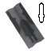
Mould: Nord Dagger, 10 ×Timberwood · per uppgradering: 10 × Bloodgold, 5 × Timberwood - Tillaga: Frost Foundry av
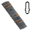
Cast: Nord Dagger
Används till
- Ingrediens i: Frostfire Dagger, Thunderblood Dagger
Nord Greataxe
A mighty axe fit for a mighty warrior.
Så får du det
- Tillverka: Svart smedja (nivå 4) av 20 × Bloodgold, 1 ×
 Mould: Nord Greataxe, 10 × Timberwood · per uppgradering: 10 × Bloodgold, 5 × Timberwood
Mould: Nord Greataxe, 10 × Timberwood · per uppgradering: 10 × Bloodgold, 5 × Timberwood - Tillaga: Frost Foundry av
 Cast: Nord Greataxe
Cast: Nord Greataxe
Används till
- Ingrediens i: Frostfire Greataxe, Thunderblood Greataxe
Nord Greatsword
A striking weapon, both visually and lethally.
Så får du det
- Tillverka: Svart smedja (nivå 4) av 20 × Bloodgold, 1 ×
 Mould: Nord Greatsword, 2 ×
Mould: Nord Greatsword, 2 ×  Frozen Branch · per uppgradering: 10 × Bloodgold, 1 × Frozen Branch
Frozen Branch · per uppgradering: 10 × Bloodgold, 1 × Frozen Branch - Tillaga: Frost Foundry av
 Cast: Nord Greatsword
Cast: Nord Greatsword
Används till
- Ingrediens i: Frostfire Greatsword, Thunderblood Greatsword
Nord Knucklechains
Wrap your fists in the hardest of metals, to ensure your foes feel the strength behind your blows.
Så får du det
- Tillverka: Svart smedja (nivå 4) av 20 × Bloodgold, 1 ×
 Mould: Nord Knucklechains, 10 × Timberwood · per uppgradering: 10 × Bloodgold, 5 × Timberwood
Mould: Nord Knucklechains, 10 × Timberwood · per uppgradering: 10 × Bloodgold, 5 × Timberwood - Tillaga: Frost Foundry av
 Cast: Nord Knucklechains
Cast: Nord Knucklechains
Används till
- Ingrediens i: Frostfire Knucklechains, Thunderblood Knucklechains
Nord Mace
Hit hard and fast, and leave your foe no time to recover.
Så får du det
- Tillverka: Svart smedja (nivå 4) av 20 × Bloodgold, 1 ×
 Mould: Nord Mace, 10 × Timberwood · per uppgradering: 10 × Bloodgold, 5 × Timberwood
Mould: Nord Mace, 10 × Timberwood · per uppgradering: 10 × Bloodgold, 5 × Timberwood - Tillaga: Frost Foundry av
 Cast: Nord Mace
Cast: Nord Mace
Används till
- Ingrediens i: Frostfire Mace, Thunderblood Mace
Nord Sledge
With this weapon, your blows will be heavy as that of a troll.
Så får du det
- Tillverka: Svart smedja (nivå 4) av 20 × Bloodgold, 1 ×
 Mould: Nord Sledge, 10 × Timberwood · per uppgradering: 10 × Bloodgold, 5 × Timberwood
Mould: Nord Sledge, 10 × Timberwood · per uppgradering: 10 × Bloodgold, 5 × Timberwood - Tillaga: Frost Foundry av
 Cast: Nord Sledge
Cast: Nord Sledge
Används till
- Ingrediens i: Frostfire Sledge, Thunderblood Sledge
Nord Spear
A golden opportunity to strike.
Så får du det
- Tillverka: Svart smedja (nivå 4) av 20 × Bloodgold, 1 ×
 Mould: Nord Spear, 10 × Timberwood · per uppgradering: 10 × Bloodgold, 5 × Timberwood
Mould: Nord Spear, 10 × Timberwood · per uppgradering: 10 × Bloodgold, 5 × Timberwood - Tillaga: Frost Foundry av
 Cast: Nord Spear
Cast: Nord Spear
Används till
- Ingrediens i: Frostfire Spear, Thunderblood Spear
Nord Sword
Even in the faintest sunlight, this weapon glimmers.
Så får du det
- Tillverka: Svart smedja (nivå 4) av 20 × Bloodgold, 1 ×
 Mould: Nord Sword, 10 × Timberwood · per uppgradering: 10 × Bloodgold, 5 × Timberwood
Mould: Nord Sword, 10 × Timberwood · per uppgradering: 10 × Bloodgold, 5 × Timberwood - Tillaga: Frost Foundry av
 Cast: Nord Sword
Cast: Nord Sword
Används till
- Ingrediens i: Frostfire Sword, Thunderblood Sword
 Northern Vengeance
Northern Vengeance
A caged snowflake, endless patterns emerging from within...
Så får du det
- Tillverka: Galderbord (nivå 3) av 10 ×
 Ice, 5 × Nornathread, 1 ×
Ice, 5 × Nornathread, 1 ×  Hexen Trophy · per uppgradering: 5 × Ice, 2 × Nornathread
Hexen Trophy · per uppgradering: 5 × Ice, 2 × Nornathread - Tillaga: Frost Foundry av
 Cast: Northern Vengeance
Cast: Northern Vengeance
 Nålpil
Nålpil
Det sista stygnet.
Så får du det
 Obsidianpil
Obsidianpil
En flisa mörker.
Så får du det
- Tillverka: 20 × Arbetsbänk (nivå 3) av 8 × Trä, 4 × Obsidian, 2 × Fjädrar
- Kistor: Stonehenge · 5–10 × · 62 % chans
 Odens dryckeshorn
Odens dryckeshorn
Odens mäktigaste krigare förtjänar de finaste drycker.
Så får du det
- Tillverka: Arbetsbänk av 4 × Ädelträ, 1 × Rådjurshuvud, 2 × Kåda
 Paws of the Bear
Paws of the Bear
Made for tearing and rending.
Så får du det
- Tillverka: Arbetsbänk (nivå 2) av 2 ×
 Björnhud, 2 ×
Björnhud, 2 ×  Björntass, 4 × Läderlappar · per uppgradering: 2 × Björnhud, 2 × Läderlappar
Björntass, 4 × Läderlappar · per uppgradering: 2 × Björnhud, 2 × Läderlappar
 Piggsvin
Piggsvin
Ett dödligt vapen, täckt med djävulska spikar.
Så får du det
 Pil
Pil
En pil av vässat trä.
Så får du det
- Tillverka: 20 × Arbetsbänk av 8 × Trä
 Pilbåge
Pilbåge
En primitiv men duglig båge.
Så får du det
- Tillverka: Arbetsbänk av 10 × Trä, 8 × Läderlappar · per uppgradering: 5 × Trä, 4 × Läderlappar, 1 × Rådjursskinn
 Rotslitare
Rotslitare
Om pilen inte naglar fast dina fiender kommer definitivt rötterna som reser sig ur marken att göra det.
Så får du det
 Rottand
Rottand
Likt de förvridna grenarna söker solen söker denna båge slakt.
Så får du det
 Rökbomb
Rökbomb
Alla vet att du inte kan andas i röken.
Så får du det
- Tillverka: 10 × Arbetsbänk av 1 ×
 Rökpuff, 1 × Asksvinsblåsa
Rökpuff, 1 × Asksvinsblåsa
 Serveringsbricka
Serveringsbricka
Duka bordet med vilken mat och dryck du än önskar, och imponera på dina gäster med en festmåltid. När måltiden väl ätits av kommer den inte ge tillbaka resurser om den plockas sönder.
Så får du det
- Köp: Myrhäxan · 140 mynt
 Silverkniv
Silverkniv
En bitskt stycke smärta.
Så får du det
- Tillverka: Smedja (nivå 3) av 2 × Trä, 10 × Silver, 3 × Läderlappar, 2 × Järn · per uppgradering: 1 × Trä, 5 × Silver, 1 × Läderlappar, 1 × Järn
 Silverpil
Silverpil
En nål för att lugna rastlösa andar.
Så får du det
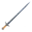
SilversvärdDen ädlaste av metaller. Inget orent står ut med att vidröra den.
Så får du det
- Tillverka: Smedja (nivå 3) av 2 × Trä, 40 × Silver, 3 × Läderlappar, 5 × Järn · per uppgradering: 1 × Trä, 20 × Silver, 1 × Läderlappar, 3 × Järn
 Skallsplittraren
Skallsplittraren
Will find skulls to split even in the thickest of mists.
Så får du det
- Tillverka: Svart smedja av 30 × Järn, 15 × Trä från Yggdrasil, 10 × Raffinerad Eter · per uppgradering: 15 × Järn, 5 × Trä från Yggdrasil
 Skoll och Hate
Skoll och Hate
Ett hugg för de som dig svikit, och två till för dem som förtjänar ditt hat.
Så får du det
- Tillverka: Svart smedja av 4 × Ädelträ, 10 × Järn, 10 × Svartmetall · per uppgradering: 4 × Järn, 4 × Svartmetall
 Slaktkniv
Slaktkniv
En styckmästares tillhygge att slakta tamdjur med.
Så får du det
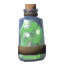
Slemhög på flaskaShould this vial break, caution is strongly advised.
Så får du det
- Tillverka: Arbetsbänk av 1 × Flaska med kork, 1 ×
 Blobb-trofé, 3 × Kåda
Blobb-trofé, 3 × Kåda
 Slemhög på flaska
Slemhög på flaska
Breathing in the fumes is not recommended.
Så får du det
- Tillverka: Arbetsbänk av 1 × Flaska med kork, 3 × Blobb-trofé, 3 × Kåda
 Slitare
Slitare
Sliter isär dina fiender, helt enkelt.
Så får du det
- Tillverka: Svart smedja (nivå 3) av 10 × Askträ, 8 × Eldmetall, 2 × Morgen Sena, 4 × Bensjöodjurstand · per uppgradering: 5 × Askträ, 4 × Eldmetall, 1 × Morgen Sena, 4 × Bensjöodjurstand
Används till
- Ingrediens i: Rotslitare, Stormslitare, Sårslitare
 Snow Shovel
Snow Shovel
Useful for clearing away the deepest of snow.
Så får du det
 Snowball
Snowball
Looks like a perfect thing to throw...
Så får du det
- Plocka upp: Ligger på marken eller växer vilt · Djupaste Norden
- Släpps av: Grådvärg · Djupaste Norden
- Tillverka: 10 × utan arbetsbänk av 5 × Ice
Används till
- Byggmaterial till: Snow Lantern
 Spirit Caller
Spirit Caller
Summon otherworldly aid. It only costs a drop of your blood...
Så får du det
- Tillverka: Galderbord (nivå 3) av 8 × Frozen Branch, 5 × Nornathread, 1 ×
 Moose Trophy · per uppgradering: 4 × Frozen Branch, 2 × Nornathread
Moose Trophy · per uppgradering: 4 × Frozen Branch, 2 × Nornathread - Tillaga: Frost Foundry av
 Cast: Spirit Caller
Cast: Spirit Caller
 Splitner
Splitner
Klyv dina fienders hjärtan itu.
Så får du det
- Tillverka: Svart smedja (nivå 3) av 10 × Askträ, 6 × Eldmetall, 2 × Asksvinspäls, 3 × Bensjöodjurstand · per uppgradering: 5 × Askträ, 6 × Eldmetall, 1 × Asksvinspäls, 3 × Bensjöodjurstand
Används till
- Ingrediens i: Splitner det blödande, Splitner det stormande, Splitner det ursprunglige
 Splitner det blödande
Splitner det blödande
Ett litet offer krävs inför varje strid...
Så får du det
 Splitner det stormande
Splitner det stormande
Låt åskknallen klyva luften itu.
Så får du det
 Splitner det ursprunglige
Splitner det ursprunglige
Naturens otämjda makt bryter marken varhän detta spjut slår ner.
Så får du det
 Stenyxa
Stenyxa
En enkel yxa för att fälla träd.
Så får du det
 Stinkbomb
Stinkbomb
Stanken är outhärdlig...
Så får du det
- Tillverka: 5 × Arbetsbänk av 5 × Läderlappar, 5 × Gegga, 3 × Kåda
 Stop
Stop
Skål!
Så får du det
 Stormslitare
Stormslitare
Pilarna kommer riva genom dina fiender som blixtar river genom molnen.
Så får du det
 Stormstjärna
Stormstjärna
Extra effektiv på molniga mornar.
Så får du det
- Tillverka: Svart smedja (nivå 4) av 1 × Eldmetallklubba, 8 × Eldmetall, 1 × Iolit · per uppgradering: 8 × Eldmetall, 1 × Iolit
 Stormtand
Stormtand
Låt dina pilar flyga som blixten slår.
Så får du det
 Stort träsvärd
Stort träsvärd
Would you be careful with that, please?
Så får du det
- Kistor: Dvergr-vakttorn (ruin) · 14 % chans, Klippnål · 14 % chans, Infekterad gruva · 12 % chans
 Stridsyxa
Stridsyxa
Skallbensbräckare; krigarens lycka.
Så får du det
- Tillverka: Smedja (nivå 2) av 30 × Uråldrig bark, 35 × Järn, 4 × Läderlappar · per uppgradering: 5 × Uråldrig bark, 15 × Järn
 Stridsyxa av kristall
Stridsyxa av kristall
Genomskinlig och genomborrande.
Så får du det
- Tillverka: Smedja (nivå 3) av 40 × Uråldrig bark, 30 × Silver, 10 × Kristall · per uppgradering: 5 × Uråldrig bark, 15 × Silver
 Stridsyxa av svartmetall
Stridsyxa av svartmetall
Green shall be the last thing your foes see before you cleave them in half.
Så får du det
- Tillverka: Smedja (nivå 4) av 10 × Ädelträ, 30 × Svartmetall, 5 × Linnetråd · per uppgradering: 15 × Svartmetall, 5 × Linnetråd
 Svartmetallkorp
Svartmetallkorp
En ordentlig hacka av glimrande mörk metall.
Så får du det
- Tillverka: Smedja (nivå 2) av 3 × Trä från Yggdrasil, 25 × Svartmetall · per uppgradering: 1 × Trä från Yggdrasil, 15 × Svartmetall
 Svartmetallpil
Svartmetallpil
En elegant pil av svartmetall.
Så får du det
- Tillverka: 20 × Svart smedja (nivå 2) av 2 × Svartmetall, 8 × Trä, 2 × Fjädrar
 Svartmetallprojektil
Svartmetallprojektil
De tjocka projektilerna kan slå hål i huden på även de tuffaste fiender.
Så får du det
- Tillverka: 20 × Hantverkarbord av 10 × Trä, 1 × Svartmetall
 Svedd armborstpil
Svedd armborstpil
Ett kraftigt ben från en handled, format till en dödlig pil.
Så får du det
- Tillverka: 20 × Svart smedja av 2 × Bränt ben, 8 × Askträ, 2 × Fjädrar
- Kistor: Skeppssättning (grav) · 5–11 × · 53 % chans, By i norr · 5–11 × · 53 % chans, Hydda (Norr) · 5–11 × · 52 % chans, Skogshuggarläger · 5–11 × · 52 % chans, Skeppsvrak (Norr) · 3–13 × · 17 % chans
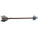
Svedd pilPilen har täljts till från ett bränt lårben, och är hård som metall.
Så får du det
- Tillverka: 20 × Svart smedja av 4 × Bränt ben, 2 × Fjädrar, 8 × Askträ
- Kistor: Skeppssättning (grav) · 5–11 × · 53 % chans, By i norr · 5–11 × · 53 % chans, Hydda (Norr) · 5–11 × · 52 % chans, Skogshuggarläger · 5–11 × · 52 % chans, Mörk Borg · 5–11 × · 48 % chans, Skeppsvrak (Norr) · 3–13 × · 17 % chans
 Svärd av svartmetall
Svärd av svartmetall
Ett vackert men dödligt ting. Den fångar ljuset med ett grönaktigt sken.
Så får du det
- Tillverka: Smedja (nivå 4) av 2 × Ädelträ, 20 × Svartmetall, 5 × Linnetråd · per uppgradering: 10 × Svartmetall, 5 × Linnetråd
 Sårslitare
Sårslitare
Redo att slita dina fiender i bitar.
Så får du det
 Söndrans stav
Söndrans stav
Endast de tålmodiga och fokuserade må tämja kraften i denna stav.
Så får du det
- Tillverka: Galderbord (nivå 2) av 15 × Bränt ben, 5 × Askträ, 8 × Proustitpulver · per uppgradering: 5 × Bränt ben, 3 × Askträ, 1 × Proustitpulver
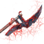
Thunderblood AtgeirThe heavens shall sound their praise as you make your enemies bleed.
Så får du det
- Tillverka: Svart smedja (nivå 4) av 1 × Nord Atgeir, 20 × Bloodgold, 1 × Thunderblood Essence · per uppgradering: 10 × Bloodgold, 1 × Thunderblood Essence
 Thunderblood Axe
Thunderblood Axe
As this axe cuts through wood and blood alike, a resounding thunderous crack shall be heard throughout the land.
Så får du det
- Tillverka: Svart smedja (nivå 4) av 1 × Nord Axe, 20 × Bloodgold, 1 × Thunderblood Essence · per uppgradering: 10 × Bloodgold, 1 × Thunderblood Essence
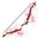
Thunderblood BowLightning dances along the string, waiting to be unleashed.
Så får du det
- Tillverka: Svart smedja (nivå 4) av 1 × Nord Bow, 20 × Bloodgold, 1 × Thunderblood Essence · per uppgradering: 10 × Bloodgold, 1 × Thunderblood Essence
 Thunderblood Crossbow
Thunderblood Crossbow
The bow is pulled taut with unreleased power, like the air before a lightning strike.
Så får du det
- Tillverka: Svart smedja (nivå 4) av 1 × Nord Crossbow, 20 × Bloodgold, 1 × Thunderblood Essence · per uppgradering: 10 × Bloodgold, 1 × Thunderblood Essence
 Thunderblood Dagger
Thunderblood Dagger
The blade is already bloodied, yet it sparks in want of more.
Så får du det
- Tillverka: Svart smedja (nivå 4) av 1 × Nord Dagger, 20 × Bloodgold, 1 × Thunderblood Essence · per uppgradering: 10 × Bloodgold, 1 × Thunderblood Essence
 Thunderblood Greataxe
Thunderblood Greataxe
As you cleave your foes in two, their blood shall sing like a thunderstorm.
Så får du det
- Tillverka: Svart smedja (nivå 4) av 1 × Nord Greataxe, 20 × Bloodgold, 1 × Thunderblood Essence · per uppgradering: 10 × Bloodgold, 1 × Thunderblood Essence
 Thunderblood Greatsword
Thunderblood Greatsword
Anyone wielding this weapon is sure to be very frightening indeed.
Så får du det
- Tillverka: Svart smedja (nivå 4) av 1 × Nord Greatsword, 20 × Bloodgold, 1 × Thunderblood Essence · per uppgradering: 10 × Bloodgold, 1 × Thunderblood Essence
 Thunderblood Knucklechains
Thunderblood Knucklechains
A fury comes over you as you fight with these weapons, your blood roaring like thunder in your ears... It seems appropriate.
Så får du det
- Tillverka: Svart smedja (nivå 4) av 1 × Nord Knucklechains, 20 × Bloodgold, 1 × Thunderblood Essence · per uppgradering: 10 × Bloodgold, 1 × Thunderblood Essence
 Thunderblood Mace
Thunderblood Mace
A weapon to rival perhaps even that of the thunder god himself...
Så får du det
- Tillverka: Svart smedja (nivå 4) av 1 × Nord Mace, 20 × Bloodgold, 1 × Thunderblood Essence · per uppgradering: 10 × Bloodgold, 1 × Thunderblood Essence
 Thunderblood Sledge
Thunderblood Sledge
As this weapon strikes true, the blow shall echo throughout the world...
Så får du det
- Tillverka: Svart smedja (nivå 4) av 1 × Nord Sledge, 20 × Bloodgold, 1 × Thunderblood Essence · per uppgradering: 10 × Bloodgold, 1 × Thunderblood Essence
 Thunderblood Spear
Thunderblood Spear
May it strike like lightning, quick and fierce.
Så får du det
- Tillverka: Svart smedja (nivå 4) av 1 × Nord Spear, 20 × Bloodgold, 1 × Thunderblood Essence · per uppgradering: 10 × Bloodgold, 1 × Thunderblood Essence
 Thunderblood Sword
Thunderblood Sword
As the blood runs along the blade, it awakens the storm within.
Så får du det
- Tillverka: Svart smedja (nivå 4) av 1 × Nord Sword, 20 × Bloodgold, 1 × Thunderblood Essence · per uppgradering: 10 × Bloodgold, 1 × Thunderblood Essence
 Tomtebloss
Tomtebloss
En gnistrande pinne. Vad fint!
Så får du det
- Köp: Hildir · 150 mynt
 Trollstav
Trollstav
Frammanar ett vidunder för död och förstörelse.
Så får du det
- Tillverka: Galderbord (nivå 2) av 15 × Bränt ben, 1 × Trollhuvud, 3 × Eldmetall, 1 × Blodsten · per uppgradering: 5 × Bränt ben, 1 × Trollhuvud, 3 × Eldmetall, 1 × Blodsten
 Träklubba
Träklubba
One has to wonder why someone made this instead of a simple club.
Så får du det
- Kistor: Draugr-by · 1–4 × · 32 % chans, Stridsruin · 6 % chans
 Träkniv
Träkniv
Some people would say this knife is better for butter.
Så får du det
- Kistor: Skeppssättning (grav) · 8,7 % chans
 Träprojektil
Träprojektil
Kraftiga projektiler av trä som ger ett starkt försvar mot fiender.
Så får du det
- Tillverka: 20 × Hantverkarbord av 5 × Kärntimmer, 2 × Fjädrar
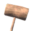
TräsläggaThis should probably hurt more than it does.
Så får du det
- Kistor: Träskruin (torn) · 20 % chans, Gravfält · 20 % chans
 Träspjut
Träspjut
This is just as sharp as a real spear, if a real spear was made out of wood.
Så får du det
- Kistor: Tornruin · 11 % chans, Ruin · 11 % chans, Träskhydda · 11 % chans, Sjunken tornruin · 11 % chans, Trollgrotta · 11 % chans, Stenhusruin · 11 % chans
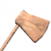
TrästridsyxaIntimidating, but not as intimidating as the real thing.
Så får du det
- Kistor: Övergiven timmerstuga · 10 % chans, Bergbrunn · 10 % chans, Tornruin · 10 % chans
 Träsvärd
Träsvärd
Mostly harmless, unless you're very persistent.
Så får du det
- Tillverka: Arbetsbänk av 5 × Trä, 3 × Ädelträ, 2 × Kärntimmer · per uppgradering: 1 × Trä, 10 × Ädelträ, 2 × Kärntimmer
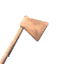
TräyxaIf this axe could chop wood, wouldn't that be strange?
Så får du det
- Kistor: Skeppssättning (grav) · 8,7 % chans
 Tungt fiskbete
Tungt fiskbete
Detta agn sjunker djupt. Djupt nog att locka till sig havets mest djupgående kreatur.
Så får du det
- Tillverka: 20 × Matberedningsbord av 20 × Fiskbete, 1 ×
 Havsormshuvud
Havsormshuvud
Används till
- Bete för: Koralltorsk, Tonfisk
 Ur-bärsärkaryxor
Ur-bärsärkaryxor
Dina innersta instinkter tar över, och naturen sträcker fram en hjälpande hand.
Så får du det
- Tillverka: Svart smedja (nivå 4) av 1 × Bärsärkayxor, 5 × Eldmetall, 1 × Jade · per uppgradering: 5 × Eldmetall, 1 × Jade
 Urdräpare
Urdräpare
I harmoni med världens urkrafter söker klingan bråd död.
Så får du det
 Uråldrigt barkspjut
Uråldrigt barkspjut
Trots dess knotiga utseende är det här spjutet starkt och perfekt balanserat.
Så får du det
- Tillverka: Smedja (nivå 3) av 4 × Trollskinn, 10 × Järn, 10 × Uråldrig bark · per uppgradering: 1 × Trollskinn, 5 × Järn, 5 × Uråldrig bark
 Vildmarksstav
Vildmarksstav
Uråldrig naturkraft ligger på lur inuti staven, redo att släppas lös.
Så får du det
- Tillverka: Galderbord (nivå 2) av 15 × Askträ, 10 ×
 Strutbräken, 3 × Himlafjäder, 1 × Jade · per uppgradering: 5 × Askträ, 2 × Strutbräken, 3 × Himlafjäder, 1 × Jade
Strutbräken, 3 × Himlafjäder, 1 × Jade · per uppgradering: 5 × Askträ, 2 × Strutbräken, 3 × Himlafjäder, 1 × Jade
 Vilebone Maulclaws
Vilebone Maulclaws
These claws will rend flesh and bone alike.
Så får du det
- Tillverka: Smedja (nivå 4) av 2 × Björnhud, 2 ×
 Kadaver bröstkorg, 2 × Svartmetall, 4 × Linnetråd · per uppgradering: 1 × Björnhud, 1 × Kadaver bröstkorg, 1 × Svartmetall, 2 × Linnetråd
Kadaver bröstkorg, 2 × Svartmetall, 4 × Linnetråd · per uppgradering: 1 × Björnhud, 1 × Kadaver bröstkorg, 1 × Svartmetall, 2 × Linnetråd
 Väktarstav
Väktarstav
För ett ringa blodsoffer skyddar den sin ägare i ett skal av magi.
Så får du det
- Tillverka: Galderbord av 20 × Trä från Yggdrasil, 4 ×
 Blodpropp, 16 × Raffinerad Eter · per uppgradering: 10 × Trä från Yggdrasil, 2 × Blodpropp, 8 × Raffinerad Eter
Blodpropp, 16 × Raffinerad Eter · per uppgradering: 10 × Trä från Yggdrasil, 2 × Blodpropp, 8 × Raffinerad Eter
 Wooden Atgeir
Wooden Atgeir
It might not hurt a lot, but it has reach!
Så får du det
- Kistor: Fuling-hydda · 17 % chans, Stentorn (Berg) · 17 % chans, Ruin · 17 % chans, Hildir-uppdrag: Förseglat torn · 17 % chans, Fuling-by · 17 % chans
 Yxa av svartmetall
Yxa av svartmetall
En perfekt balanserad yxa smidd av mörk metall med smaragdglans.
Så får du det
- Tillverka: Smedja (nivå 4) av 6 × Ädelträ, 20 × Svartmetall, 5 × Linnetråd · per uppgradering: 10 × Svartmetall, 5 × Linnetråd
 Ädelträpilbåge
Ädelträpilbåge
En enkel pilbåge av starkt, flexibelt trä.
Så får du det
- Tillverka: Arbetsbänk av 10 × Ädelträ, 10 × Kärntimmer, 2 × Rådjursskinn · per uppgradering: 5 × Ädelträ, 5 × Kärntimmer, 2 × Rådjursskinn